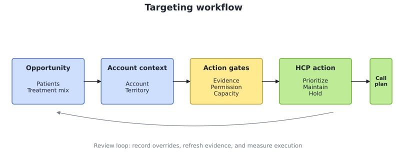
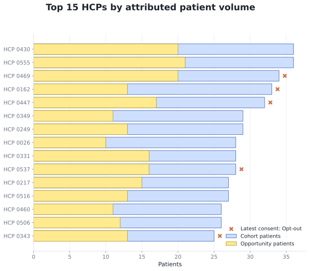
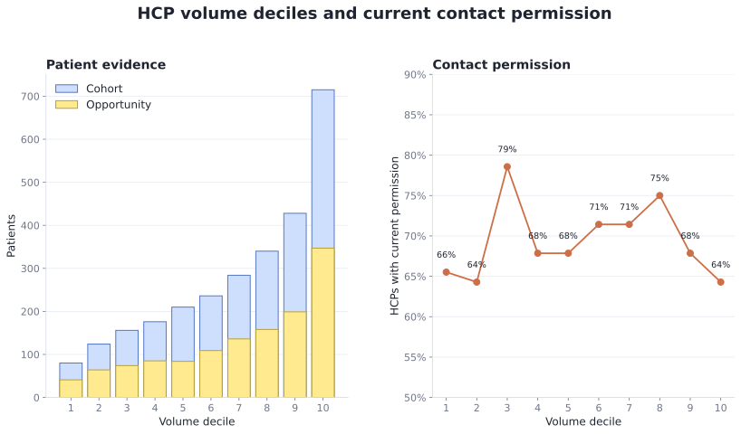
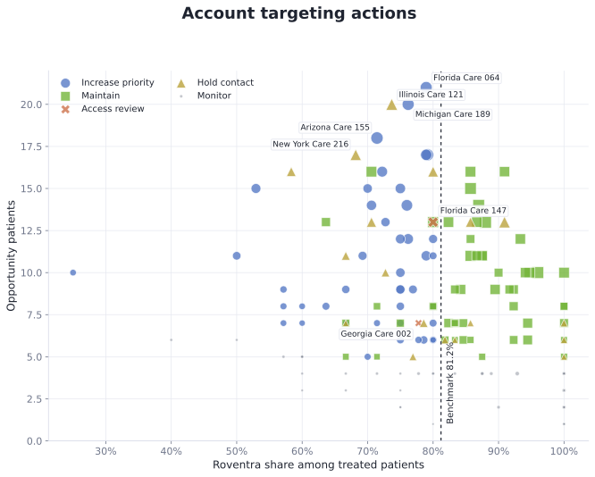
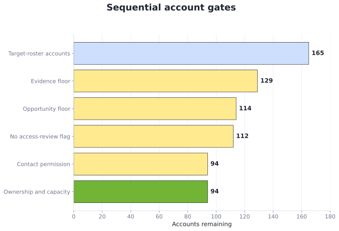
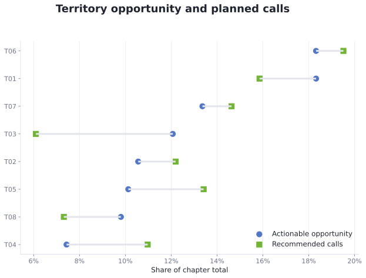

Chapter 6: HCP and Account Targeting: From Opportunity to Field Action
The Chapter 5 journey cohort contains 6,393 patients. Maya, a fictional launch analytics lead, can attribute 2,749 of them to 281 healthcare professionals (HCPs) and 165 accounts. Those HCPs belong to the synthetic field roster, the internal list used for field planning. Her first volume sort produces an immediate list: take the 30 HCPs with the largest attributed cohorts and call them first.
That list sends 10 of the 30 selections to HCPs whose latest customer relationship management (CRM) consent is Opt-out. The field team cannot execute one-third of the list through the planned channel. The ranking also collapses untreated opportunity, established Roventra use, and unresolved pharmacy transactions into one recommendation. Those situations require different work.
The commercial questions are concrete:
- Where is the largest observed patient opportunity?
- Which accounts support a near-term field action?
- Which HCP should receive that action inside each account?
- Which accounts need access review, a contact hold, maintenance, or monitoring?
- Does the call plan allocate field capacity in proportion to actionable opportunity?
The answers determine which accounts enter the near-term plan, which HCP contacts are suppressed, where access evidence needs review, and how field capacity is distributed. A weak list can waste call capacity, over-contact recent customers, and send an adoption message into an unresolved access problem.
By the end of the chapter, you will build a transparent targeting package from the Chapter 3 source tables and the Chapter 5 journey artifact. The package contains HCP features, volume deciles, account actions, HCP actions, a bounded call plan, a territory allocation check, and the rule specification needed for review. The code uses synthetic data. The workflow is designed so a stakeholder can trace every recommendation back to its evidence and rule.
Run the chapter workflow from the repository root:
uv run python ch06_hcp/scripts/run_analysis.py
Target-roster patients: 2,749
Target HCPs with attributed patients: 281
Accounts with attributed patients: 165
Account actions:
account_action
Maintain 51
Monitor 51
Increase priority 43
Hold contact 18
Access review 2
Planned HCPs: 69
Recommended calls: 82
Wrote Chapter 6 outputs to ch06_hcp/assets/generated_outputs
6.1 Define the Targeting Decision
This chapter uses 2 decision grains. An HCP row identifies the person who could receive an engagement. An account row identifies the practice setting that shapes ownership, capacity, current adoption, and the work around that HCP. The call plan joins both grains because a valid HCP action can still depend on account conditions.
The workflow starts with patient evidence and account context, then applies evidence, permission, and capacity gates before assigning an HCP action and a bounded call plan.

Figure 6.1. Targeting converts observed opportunity into a permitted and capacity-aware action. Synthetic workflow.
The analysis date is December 31, 2024. Patient journeys and CRM history are both cut off on that date. A January contact cannot change a December target list. This as-of-date rule keeps the evidence reproducible and prevents future information from entering the plan.
The word target means an HCP or account selected for a defined commercial action under the current evidence and policy. The label authorizes a commercial planning step; clinical appropriateness for a patient remains a clinician-patient decision.
Table 6.1. Each target action has a distinct business use.
| Action | Meaning in this chapter | Commercial use |
|---|---|---|
| Increase priority | The account has sufficient opportunity, current contact permission, available capacity, limited recent saturation, and Roventra share below the roster benchmark | Add near-term field activity |
| Maintain | The account is actionable, but current adoption or recent engagement supports steady coverage | Preserve an established relationship without adding intensity |
| Access review | At least 2 untreated patients have unresolved transaction signals | Send the evidence to the team that can examine access or fulfillment friction |
| Hold contact | The account has opportunity, but no HCP has current permission for the planned contact | Suppress the proposed contact until permission changes |
| Monitor | The evidence or opportunity is below the chapter threshold | Refresh the evidence before assigning field work |
6.2 Build the HCP Evidence Layer
The evidence layer joins the Chapter 5 index date and treatment state to the rendering HCP on the Chapter 3 diagnosis encounter, then attaches account assignment from the field roster and engagement and consent from CRM.
All input records in this workflow are synthetic. The Chapter 6 CSV files are derived analytical outputs.
Listing 6.1: Load the source tables used by the targeting workflow.
from pathlib import Path
import sys
ROOT = Path.cwd()
SCRIPT_DIR = ROOT / "ch06_hcp" / "scripts"
sys.path.insert(0, str(SCRIPT_DIR))
from run_analysis import load_inputs
inputs = load_inputs(ROOT)
for name, frame in inputs.items():
print(f"{name:15s} {len(frame):>7,} rows")
journeys 6,393 rows
medical_claims 49,882 rows
hcp_roster 281 rows
providers 666 rows
accounts 250 rows
crm 3,359 rows
6.2.1 Attribute the patient to an HCP
The first qualifying diagnosis date defines the patient index in Chapter 5. We use the rendering NPI on that same encounter as the attribution HCP. If several qualifying encounters occur on the index date, the deterministic rule keeps the first encounter ID. A real implementation should define a clinical hierarchy for ties, such as specialist over generalist or attending over rendering provider, and then test the result under alternatives.
Listing 6.2: Build the HCP evidence table.
from targeting import build_hcp_features
hcp_features, patient_hcp = build_hcp_features(inputs)
coverage = patient_hcp.patient_id.nunique() / inputs["journeys"].patient_id.nunique()
print(f"Attributed target-roster patients: {patient_hcp.patient_id.nunique():,}")
print(f"Journey cohort patients: {inputs['journeys'].patient_id.nunique():,}")
print(f"Target-roster coverage: {coverage:.1%}")
print(f"HCPs with attributed patients: {hcp_features.npi.nunique():,}")
Attributed target-roster patients: 2,749
Journey cohort patients: 6,393
Target-roster coverage: 43.0%
HCPs with attributed patients: 281
The 43.0% coverage is 2,749 attributed patients divided by 6,393 journey patients. Describe the HCP table as the target-roster subset and keep that denominator with every market-level interpretation.
One HCP feature row contains the following evidence:
Table 6.2. HCP features keep opportunity, engagement, and permission separate.
| Field | Definition | Use |
|---|---|---|
| Cohort patients | Patients whose diagnosis index is attributed to the HCP | Observed patient-flow volume |
| Roventra starts | Attributed patients whose first observed treatment is Roventra | Current launch adoption signal |
| Competitor starts | Attributed patients whose first observed treatment is Nexoral or Vexpro | Competitive treatment signal |
| Untreated patients | Attributed patients with no observed treatment through follow-up | Unresolved treatment opportunity signal |
| Opportunity patients | Competitor starts plus untreated patients | Triage quantity for account review |
| Access-signal patients | Untreated patients with a pended pharmacy transaction | Trigger for a separate access review when repeated |
| Recent contacts | CRM interactions in the 90 days through December 31, 2024 | Engagement saturation check |
| Contact permitted | Latest CRM consent equals Allowed |
Contact gate for the planned channel |
Use the opportunity count only for account triage. Clinical appropriateness, prescribing intent, and the reason a patient remained untreated sit outside the claims evidence.
6.2.2 See why volume alone fails
The 15 highest-volume HCPs make the problem visible. Four have an Opt-out status in the latest CRM record, including 3 of the top 5. The gold portion of each bar shows patients who were untreated or started a competitor. That portion varies even among HCPs with similar total volume.

Figure 6.2. A volume ranking mixes contactable and unavailable HCPs and hides differences in the type of opportunity. Synthetic data.
The top-30 list quantifies the business failure.
naive = hcp_features.nlargest(30, "cohort_patients")
print(f"Selected HCPs: {len(naive):,}")
print(f"Contact permitted: {naive.contact_permitted.sum():,}")
print(f"Opted out: {(~naive.contact_permitted).sum():,}")
print(f"Recent contacts: {naive.recent_contacts.sum():,}")
Selected HCPs: 30
Contact permitted: 20
Opted out: 10
Recent contacts: 32
The list loses 10 selections at the permission check. Listing 6.6 builds the gated plan later in the chapter.
6.3 Use Volume Deciles as a Diagnostic
Volume deciles divide the 281 HCPs into 10 nearly equal groups after sorting on attributed cohort size. Decile 10 contains the highest-volume HCPs. Each decile contains 28 or 29 HCPs, so the patient totals rise sharply even though the HCP counts stay almost constant.
Listing 6.3: Create HCP volume deciles.
from targeting import build_decile_summary
hcp_deciles, decile_summary = build_decile_summary(hcp_features)
view = decile_summary[
[
"volume_decile", "hcps", "cohort_patients", "opportunity_patients",
"permitted_hcps", "contactable_share"
]
].copy()
view["contactable_share"] = view["contactable_share"].map(lambda x: f"{x:.1%}")
print(view.to_string(index=False))
volume_decile hcps cohort_patients opportunity_patients permitted_hcps contactable_share
1 29 80 41 19 65.5%
2 28 124 64 18 64.3%
3 28 156 74 22 78.6%
4 28 176 85 19 67.9%
5 28 210 84 19 67.9%
6 28 236 109 20 71.4%
7 28 284 136 20 71.4%
8 28 340 158 21 75.0%
9 28 428 199 19 67.9%
10 28 715 347 18 64.3%
Decile 10 contains 715 attributed patients and 347 opportunity patients. Its contactable share is 18 permitted HCPs divided by 28 HCPs, or 64.3%. Decile 8 has less patient volume but a 75.0% contactable share, based on 21 of 28 HCPs. The decile table therefore answers 2 separate questions: where patient volume concentrates and whether the planned channel can reach the HCPs in that tier.

Figure 6.3. Patient volume increases by decile, while current contact permission remains uneven. Synthetic data.
Use deciles to diagnose coverage, set service tiers, and review how activity is distributed. The final action still needs account context, current permission, recent engagement, and capacity.
6.4 Aggregate HCP Evidence to the Account
An account may contain several HCPs and holds practical constraints outside the individual HCP row. Territory assignment establishes field ownership, capacity limits near-term activity, and another permitted HCP can keep the account actionable when 1 HCP has opted out.
The account table sums patient evidence across target-roster HCPs and retains HCP counts, recent contacts, territory, and capacity. Roventra share uses Roventra starts divided by treated patients. Across this target-roster cohort, 1,452 of 1,788 treated patients started Roventra, which gives an 81.2% benchmark.
6.4.1 State the policy before ranking
The chapter uses scenario policy inputs chosen for a transparent teaching example. A production team would validate each threshold against data stability, field capacity, governance, and local business rules.
Table 6.3. The account policy applies gates before priority.
| Step | Chapter rule | Decision effect |
|---|---|---|
| Evidence floor | At least 10 attributed cohort patients | Monitor accounts with unstable small counts |
| Opportunity floor | At least 5 competitor-start or untreated patients | Keep field review tied to a material signal |
| Access review | After the evidence and opportunity floors, at least 2 untreated patients with pended transactions | Route the account for access investigation |
| Permission | At least 1 HCP with current Allowed consent |
Hold the proposed contact when no permitted HCP exists |
| Ownership and capacity | Valid territory and capacity above 0 | Require an owner and room to act |
| Saturation | At least 2 recent contacts per target HCP | Keep the current activity level |
| Adoption gap | Roventra share below 81.2% | Increase priority after every gate passes |
The access signal provides routing evidence. A pended transaction can arise from documentation, benefit verification, pharmacy processing, or another administrative step. Chapter 7 adds formulary and payer evidence before anyone assigns a cause.
Listing 6.4: Apply the account policy.
from targeting import build_account_features, apply_account_policy
account_features = build_account_features(hcp_features, inputs["accounts"])
account_targets = apply_account_policy(account_features)
print(
"Roventra starts / treated:",
f"{account_features.roventra_starts.sum():,} / "
f"{account_features.treated_patients.sum():,}",
)
counts = (
account_targets.account_action.value_counts()
.rename_axis("account_action")
.reset_index(name="accounts")
)
print(counts.to_string(index=False))
Roventra starts / treated: 1,452 / 1,788
account_action accounts
Maintain 51
Monitor 51
Increase priority 43
Hold contact 18
Access review 2
The result is a 5-queue worklist: 43 Increase priority, 51 Maintain, 2 Access review, 18 Hold contact, and 51 Monitor.
6.4.2 Read the account action map
The map uses Roventra share on the horizontal axis, opportunity patients on the vertical axis, point size for attributed cohort size, and marker color and shape for the policy action. The vertical line marks the 81.2% roster benchmark.

Figure 6.4. Accounts with similar opportunity can receive different actions because permission, transaction signals, saturation, and adoption also affect the decision. Synthetic data.
Table 6.4 maps similar opportunity counts to different actions. Florida Care 064 enters field priority, repeated pended transactions route Florida Care 147 to access review, and the absence of a permitted HCP places Illinois Care 121 on hold.
Table 6.4. The same opportunity measure can lead to different work.
| Account | Cohort | Opportunity | Roventra starts / treated | Contactable HCPs | Access-signal patients | Action |
|---|---|---|---|---|---|---|
| Florida Care 064 | 36 | 21 | 15 / 19 (78.9%) | 1 | 0 | Increase priority |
| Arizona Care 155 | 38 | 18 | 20 / 28 (71.4%) | 1 | 0 | Increase priority |
| Florida Care 147 | 29 | 13 | 16 / 20 (80.0%) | 1 | 2 | Access review |
| Illinois Care 121 | 34 | 20 | 14 / 19 (73.7%) | 0 | 0 | Hold contact |
6.5 See What Each Gate Removes
The gate summary applies each rule in sequence. It starts with the 165 accounts that have at least 1 attributed target-roster patient. The evidence floor retains 129. The opportunity floor retains 114. The access rule routes 2 more accounts away from standard field priority. Contact permission removes 18 accounts, leaving 94. Every remaining account has a valid territory and positive capacity in this synthetic package.
from targeting import build_gate_summary
gate_summary = build_gate_summary(account_targets)
print(gate_summary.to_string(index=False))
stage accounts
Target-roster accounts 165
Evidence floor 129
Opportunity floor 114
No access-review flag 112
Contact permission 94
Ownership and capacity 94

Figure 6.5. Permission is the largest operational reduction after the evidence floor: 18 accounts leave the field-action path at that gate. Synthetic data.
The sequential gates assign 36 accounts below the evidence floor and 15 below the opportunity floor to monitoring. The remaining queues contain 2 access reviews, 18 contact holds, and 94 fully eligible accounts.
6.6 Select the HCP Inside the Account
The account action sets the context, and the HCP rule then checks that person's current permission and recent contact history. This sequence keeps HCP recommendations consistent with account ownership while excluding opted-out HCPs from the call plan.
Table 6.5. HCP rules resolve the action within the account.
| Account action | HCP condition | HCP action |
|---|---|---|
| Any | Latest consent is Opt-out or missing |
Hold contact |
| Access review | Contact permitted | Access follow-up |
| Increase priority | Contact permitted and fewer than 2 recent contacts | Prioritize |
| Maintain | Contact permitted and no recent contact | Maintain |
| Remaining cases | Default | Monitor |
Listing 6.5: Resolve HCP actions inside the account decision.
from targeting import build_hcp_actions
hcp_targets = build_hcp_actions(hcp_deciles, account_targets)
action_counts = (
hcp_targets.hcp_action.value_counts()
.rename_axis("hcp_action")
.reset_index(name="hcps")
)
print(action_counts.to_string(index=False))
hcp_action hcps
Monitor 111
Hold contact 86
Prioritize 56
Maintain 27
Access follow-up 1
Account-level permission remains broader because an account can contain both permitted and opted-out HCPs.
6.7 Turn Actions into a Bounded Call Plan
The call plan converts priority into activity. Priority accounts receive between 1 and 3 suggested contacts, bounded by account capacity and scaled at roughly 1 contact per 8 opportunity patients. Maintenance is limited to 1 contact when the recent-contact rate is below 1 per target HCP. Within each account, allocation starts with permitted HCPs that combine high opportunity with limited recent contact.
Listing 6.6: Build the HCP call plan and territory summary.
from targeting import build_call_plan, build_territory_summary
call_plan = build_call_plan(account_targets, hcp_targets)
territory = build_territory_summary(account_targets, call_plan)
print(f"Planned HCPs: {call_plan.npi.nunique():,}")
print(f"Recommended calls: {call_plan.recommended_calls.sum():,}")
print(call_plan.head(5).to_string(index=False))
Planned HCPs: 69
Recommended calls: 82
territory account_id account_name npi specialty account_action hcp_action recommended_calls hcp_opportunity_patients recent_contacts reason
T01 ACC064 Florida Care 064 9000000555 Oncology Increase priority Prioritize 1 21 1 Contactable opportunity and Roventra share below the cohort benchmark
T01 ACC224 Michigan Care 224 9000000217 Endocrinology Increase priority Prioritize 2 15 1 Contactable opportunity and Roventra share below the cohort benchmark
T01 ACC056 Pennsylvania Care 056 9000000136 Primary Care Increase priority Prioritize 2 7 1 Contactable opportunity and Roventra share below the cohort benchmark
T01 ACC024 Arizona Care 024 9000000432 Oncology Increase priority Prioritize 1 6 0 Contactable opportunity and Roventra share below the cohort benchmark
T01 ACC176 Arizona Care 176 9000000446 Primary Care Increase priority Prioritize 1 5 1 Contactable opportunity and Roventra share below the cohort benchmark
The call count is a planning scenario. Account capacity in the synthetic reference table sets the upper bound. A production plan would also use cycle length, representative capacity, channel availability, local access rules, and approved frequency policy.
Now compare equal-sized lists.
from targeting import compare_naive_and_gated
comparison = compare_naive_and_gated(hcp_targets, call_plan, top_n=30)
print(comparison.to_string(index=False))
plan selected_hcps contact_permitted opted_out opportunity_patients recent_contacts
Top 30 by patient volume 30 20 10 361 32
Gated near-term plan 30 30 0 267 14
The gated list accepts lower total patient volume in exchange for executable contact permission and lower recent saturation. The table exposes that tradeoff directly.
6.7.1 Check territory allocation
The territory table compares each territory's share of 928 field-eligible opportunity patients with its share of 82 recommended contacts. T01 and T06 each hold 170 field-eligible opportunity patients. T03 holds 112 of 928, or 12.1%, and receives 5 of 82 contacts, or 6.1%. That gap should trigger review before the plan is released.

Figure 6.6. The allocation is broadly aligned, while T03 and T04 show the largest directional gaps. Synthetic data.
Table 6.6. Territory allocation makes under- and over-allocation visible.
| Territory | Actionable opportunity | Recommended calls | Opportunity share | Call share |
|---|---|---|---|---|
| T01 | 170 | 13 | 18.3% | 15.9% |
| T06 | 170 | 16 | 18.3% | 19.5% |
| T07 | 124 | 12 | 13.4% | 14.6% |
| T03 | 112 | 5 | 12.1% | 6.1% |
| T02 | 98 | 10 | 10.6% | 12.2% |
| T05 | 94 | 11 | 10.1% | 13.4% |
| T08 | 91 | 6 | 9.8% | 7.3% |
| T04 | 69 | 9 | 7.4% | 11.0% |
Maya takes the territory gaps and HCP rows to field leadership for local review. A valid override records the account or HCP, original action, replacement action, reason, owner, approval date, and expiration date. Quiet spreadsheet edits destroy the audit trail and make later measurement unreliable.
6.8 Modern Extensions and Their Data Requirements
The transparent policy now gives Maya a benchmark for 4 advanced methods. Each extension needs a defined decision, stronger data, and an evaluation against the current artifact.
6.8.1 Propensity to start Roventra
The current file supports contemporaneous association only. A future-adoption model needs a historical feature cutoff and a later outcome window. For example, features through September 30 could predict whether a previously non-adopting HCP has a first observed Roventra start from October 1 through December 31. Using current adoption with current patient mix and engagement would leak the outcome into the predictors.
The production evaluation should use a later time period, calibration by score band, lift within the eligible universe, and an execution test against the transparent policy. The model ranks HCPs only after consent, ownership, and actionability gates pass.
6.8.2 Account and referral networks
The supplied data link HCPs to accounts, which supports a co-practice network. A referral network requires observed referral events or clinically defensible patient transitions between HCPs. Degree and betweenness centrality can describe position in the co-practice graph; causal influence requires a separate design.
6.8.3 External HCP evidence
CMS Open Payments can show disclosed financial relationships between manufacturers and covered recipients. Payment amount alone is a weak basis for a key opinion leader score. A governed KOL workflow would combine reviewed scientific activity, trial participation, publications, congress roles, peer nominations, specialty relevance, and compliance review. Keep that external evidence in a separate, purpose-bound process.
6.8.4 Optimization under capacity
Once the team can estimate incremental response, the call plan can become an optimization problem. The objective should use expected incremental value, contact cost, territory capacity, frequency limits, consent, and fairness or coverage constraints. Historical volume remains 1 feature in that objective.
6.9 Convert the Results into Commercial Value
The opening questions now have bounded answers. The largest observed opportunity sits disproportionately in the highest volume tier: decile 10 contains 347 of the 1,297 opportunity patients across all deciles. Current permission covers 18 of the 28 HCPs in that tier. Account gates convert 165 observed accounts into 94 field-eligible accounts. The final policy assigns 43 accounts to increased priority, 51 to maintenance, 2 to access review, 18 to contact hold, and 51 to monitoring. The call plan allocates 82 contacts across 69 HCPs.
Table 6.7. Each analytical result answers a commercial question and names the next action.
| Commercial question | Chapter answer | Business action | Boundary |
|---|---|---|---|
| Where is patient opportunity concentrated? | Decile 10 contains 347 opportunity patients among 28 HCPs | Protect capacity for high-volume tiers while reviewing lower tiers with better contactability | Attribution uses the diagnosis HCP and a 43.0% target-roster subset |
| Which accounts support near-term field action? | 94 of 165 accounts pass every sequential gate | Release only these accounts into standard field planning | Thresholds are scenario policy inputs |
| Which accounts need different ownership? | 2 require access review, 18 require a contact hold, and 51 remain under monitoring | Route each queue to the responsible function | The cause remains unresolved until access evidence is reviewed |
| Which HCPs enter the call plan? | 69 permitted HCPs receive 82 recommended contacts | Publish the HCP-level plan with reason and account context | Local review can produce documented overrides |
| Does activity follow opportunity? | T03 has 12.1% of actionable opportunity and 6.1% of planned contacts | Review territory capacity and the HCP-level allocation in T03 | Incremental response requires a controlled measurement design |
run_analysis.py writes the reusable targeting evidence package. Every exported row carries the analysis date, while manifest.json records source hashes, date ranges, the upstream synthetic seed, scenario assumptions, schemas, row counts, and output hashes. The account and HCP tables preserve the evidence, gate results, action, reason, territory, and capacity-aware recommendation needed for review. This package supports field planning now and provides a baseline for Chapter 7, where formulary position and payer controls can refine the access-review queue.
6.10 Summary
The chapter started with a top-30 volume list that included 10 opted-out HCPs. The corrected workflow attributed patient evidence to the field roster, measured volume and opportunity separately, aggregated the evidence to accounts, applied action gates, selected permitted HCPs, and checked territory allocation.
- HCP volume deciles describe concentration. Final action also requires account context, permission, recency, and capacity.
- Account context carries ownership, capacity, adoption, and repeated transaction signals.
- Evidence, opportunity, access review, permission, ownership, and capacity are explicit gates.
- HCP actions inherit account context and then apply person-level permission and recency.
- The call plan is a bounded scenario that can be audited and overridden with a recorded reason.
- Advanced models need temporal outcomes, leakage controls, calibration, and comparison with the transparent policy.
Use the following rule when reviewing a target: show the opportunity, pass the gates, name the action, assign the owner, bound the activity, and record the reason.
6.11 Exercises
- Change the evidence floor. Rebuild the account actions with a minimum of 5, 10, and 15 attributed patients. Compare action counts and identify 1 account whose recommendation changes. State which threshold you would take to field leadership and what stability evidence you would request. See Section 6.4.
- Audit the volume trap. Select the 30 highest-volume HCPs and compare them with the 30 planned HCPs that have the largest opportunity counts. Report permission, recent contacts, opportunity patients, and account actions for both lists. Explain which list is executable and what information remains missing. See Sections 6.2 and 6.7.
- Rebalance 1 territory. Hold the total at 82 contacts and move contacts toward T03 until its call share is within 2 percentage points of its actionable-opportunity share. Respect HCP permission and account capacity. Record which territory gives up activity and the business tradeoff. See Section 6.7.
chapter6_walkthrough.ipynb runs the chapter as one executable workflow. exercise_solutions.ipynb contains worked solutions and ends each exercise with the judgment required for real data.
Chapter 7 adds competitive and market-access evidence to explain which observed adoption gaps are commercially addressable and which are constrained by payer policy.